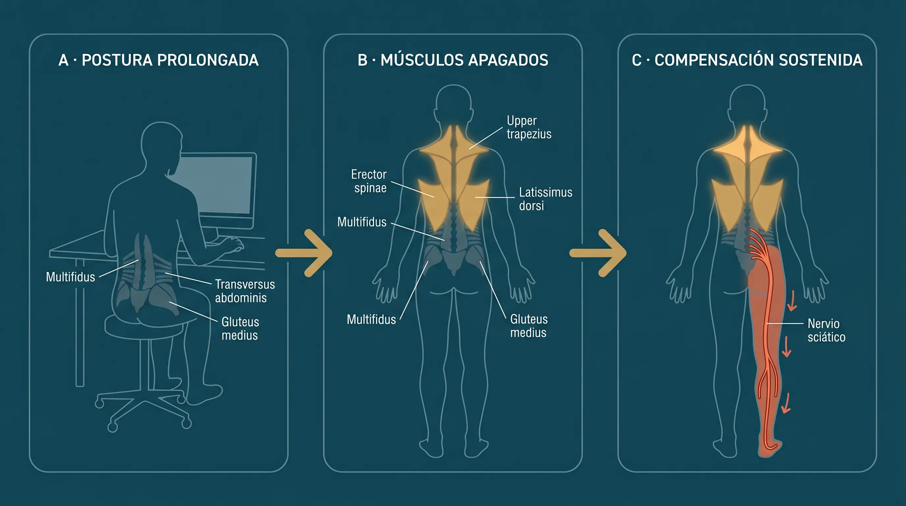
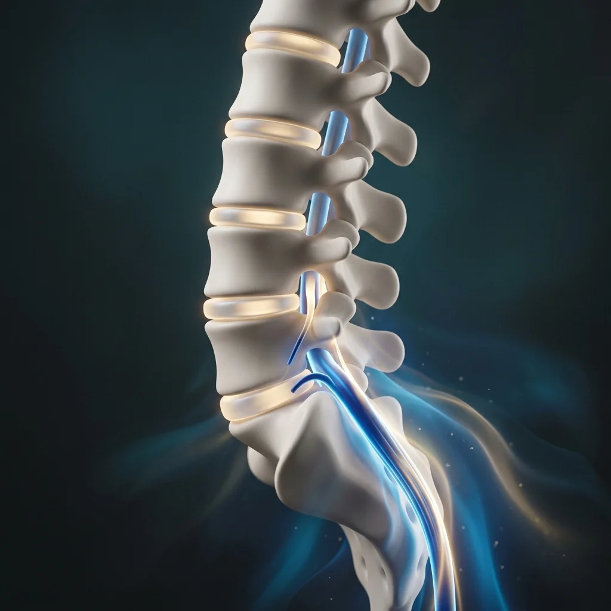
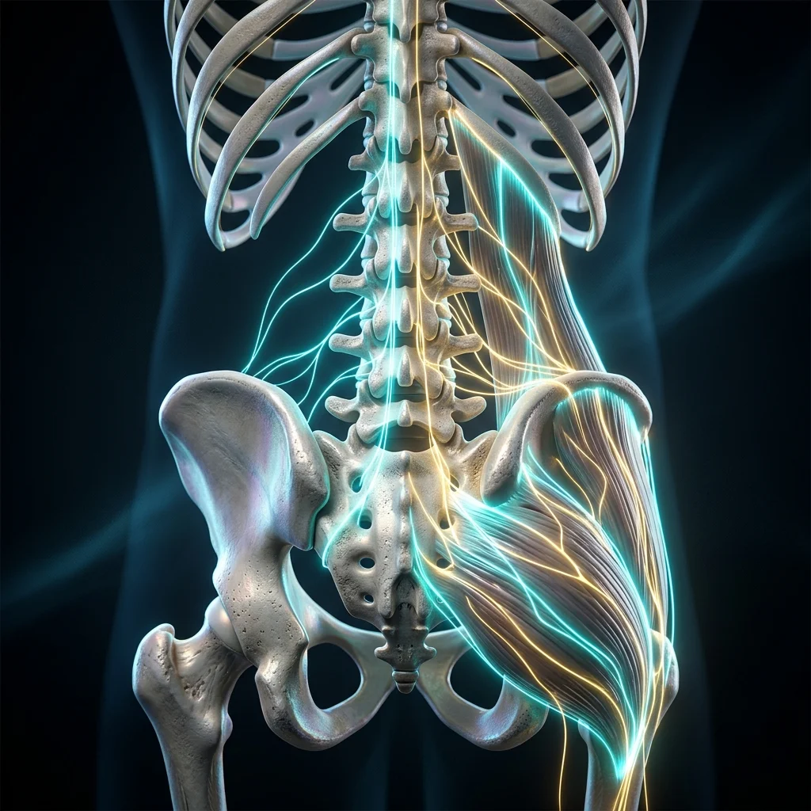
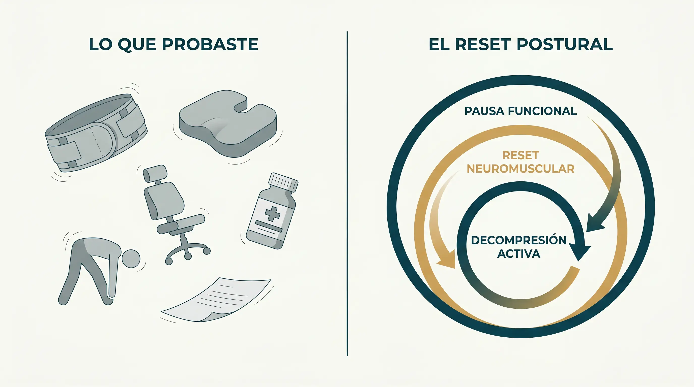
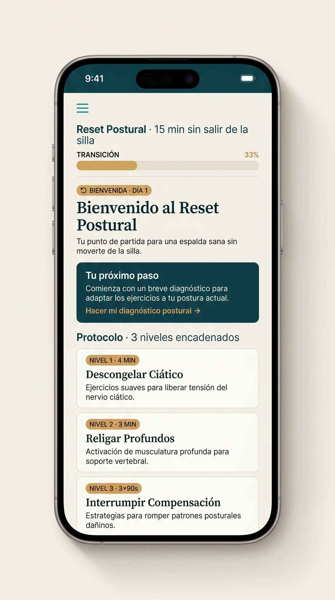
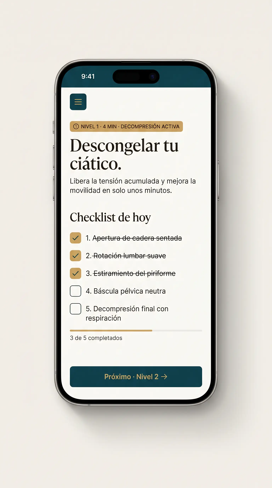
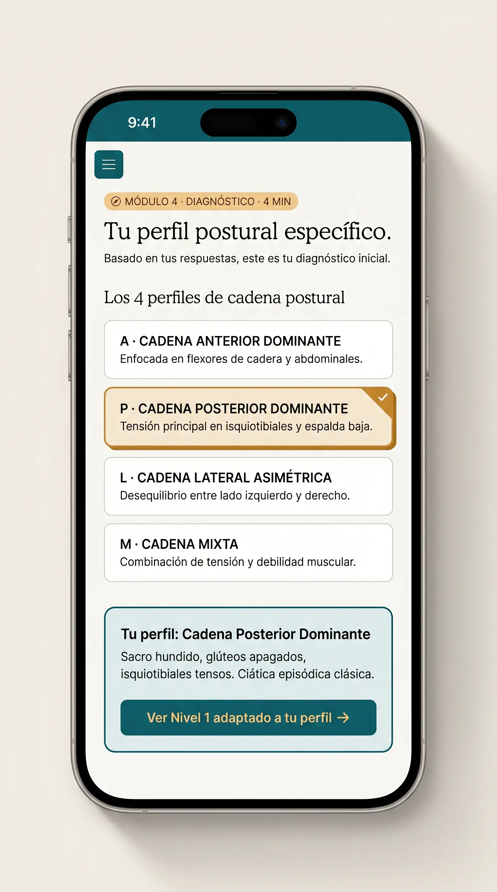
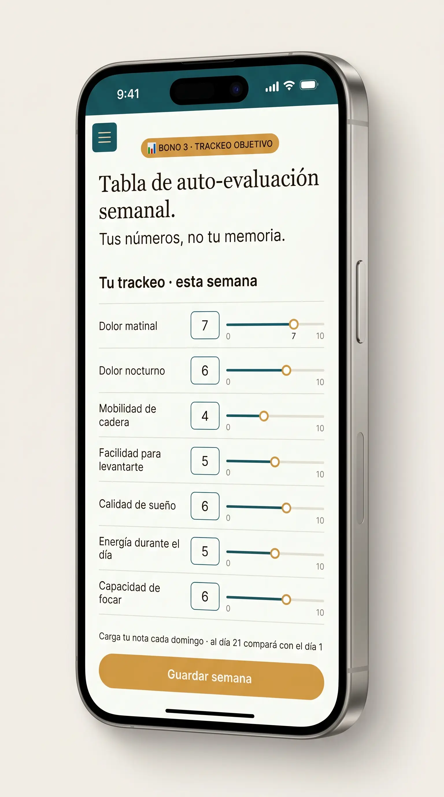

S
"Cuatro fisios, dos traumatólogos, kinesiólogo deportivo — todos me dejaban bien por dos semanas. Cuando entendí que era músculo apagado, no apretado, cambió todo. Al día 7 ya no me trababa."
Sergio R. · 41 · Mendoza · Programador
↻ Protocolo postural · 21 días · Latam
Porque apaga la señal sin religar lo que la disparó. Y mientras el circuito disparador siga apagado, cada ciclo siguiente vuelve con más carga acumulada que el anterior.
Empezar hoy — o seguir esperando que la próxima crisis te avise cuándo es "el momento".
Comenzar el Reset Postural — USD 6.90 Acceso inmediato · Garantía condicional de 7 días15 min/día · Desde tu silla · Sin pago recurrente
Jueves, 6:47 de la tarde.
Te apoyas en el muslo para levantarte de la silla. Caminas hasta la cocina como si tuvieras 70 años.
Tienes 38.
Tu pareja te ve y dice, casi sin mirar: "otra vez te trabaste."
Hace seis meses que prometes empezar mañana.
Cada uno te alivió por dos semanas. Después volvió.
El problema no es tu falta de disciplina. Es que nadie te explicó la causa real.
Antes lo hacías sin pensar. Ahora calculas.
La cadera "olvida" cómo moverse después de horas sentado.
Tres semanas bien, una arrastrándote. Sin patrón claro.
Lumbar, glúteo, muslo, rodilla. Cada profesional diagnostica algo distinto.
Cuando te sientas, te levantas, te agachas, subes al auto.
"El lunes empiezo". "Después de este proyecto". Cada promesa rota suma a la culpa.
Y mientras eso pasa, alguien sigue diciéndote que es falta de ejercicio.
Los músculos profundos que dejaron de activarse pierden más conexión neural cada mes.
A los 6 meses: lo que se reorganiza en 21 días puede tomar 60.
A los 12 meses: puede tomar 90 — o requerir intervención presencial.
Es la matemática del músculo que pierde inervación por desuso.
Probablemente hiciste mucho. Probablemente gastaste mucho.
Pero nada de eso ataca la cadena causal que está rota.
Sostienen tu cuerpo desde afuera. El día que te la olvidas, vuelve todo.
Te alivia hoy. Vuelves el martes. Tu cuerpo no aprendió — solo descansó.
Calman el síntoma. Cada ciclo siguiente llega más fuerte.
No le enseña a tu cuerpo a sostenerse. Solo le permite colapsar con dignidad.
Tocan lo superficial. Dejan dormido lo profundo.
Existe para casos avanzados. Si tu ciático es episódico, regenerar no es lo que falta.
Pero la idea no es esa.
Hay personas que sienten el primer cambio al día 3. Otras al día 10. Y un porcentaje al día 21 — o incluso al día 30. Eso no es fracaso del protocolo. Es la matemática del músculo dormido.
Cuanto más tiempo lleva dormido tu músculo profundo, más gradual es la reactivación. La curva tiene mesetas — y la meseta no es estancamiento. Es el cuerpo consolidando lo aprendido antes del siguiente salto.
Si tú eres del grupo que tarda más, no estás fuera del sistema. Estás dentro de la versión más larga del mismo sistema.
El dolor ciático sostenido no es músculo tenso. Es músculo apagado.

Postura prolongada adormece tus músculos profundos posturales.
Los superficiales compensan. No es lo mismo que sostener.
El ciático paga la cuenta. Cada estiramiento alivia hoy, recomienza mañana.
El Reset Postural en 15 Minutos ataca los tres eslabones.
No relaja: despierta lo que dejó de funcionar.
4 min/día
Descomprime ciático + relaja fascia. Alivio inmediato.

3 min/día
Activación consciente. Religa el circuito que se apagó.

3 × 90s en el día
Sin salir de la silla. Interrumpe el ciclo antes de la crisis.
11 min núcleo + 4 min distribuidos = 15 minutos por día
No es otro método suelto. Es la secuencia que reorganiza la cadena entera.

Lo que recibes al entrar
Desde el celular, tablet o computadora. Acceso inmediato después del pago.




Medir no es vigilar. Medir es re-localizar — sacar el dolor del centro de tu atención difusa y ponerlo en una nota concreta, una vez por semana. Después de marcado, vuelve al fondo. Lo que amplifica el dolor crónico es la atención continua sin canal de salida. Lo que lo encoge es la atención puntual con dato.
Sin pago recurrente · Acceso sin fecha de vencimiento · Mobile + desktop
Te levantas de la silla sin medir el movimiento — y por primera vez en meses, el primer paso del día deja de ser cálculo.
Las crisis que llegaban cada 3 semanas dejan de aparecer en el calendario — y dejas de planear tu fin de semana alrededor del miedo de la próxima recaída.
Subes escaleras, agarras cosas del piso, cruzas las piernas en una reunión — sin que tu cuerpo te cobre la factura después.
Duermes sin que la posición tenga que ser exacta — el cuerpo apoya, no negocia. Y la mañana ya no llega con el reseteo de la tensión acumulada del día anterior.
Dejas de hablar de "mi pobre espalda" como si fuera entidad ajena — vuelve a ser parte de ti, no la cosa que sufre cuando intentas vivir.
Te lo cuento yo en una página. Ellos te lo cuentan desde adentro.
"Cuatro fisios, dos traumatólogos, kinesiólogo deportivo — todos me dejaban bien por dos semanas. Cuando entendí que era músculo apagado, no apretado, cambió todo. Al día 7 ya no me trababa."
Sergio R. · 41 · Mendoza · Programador
"12 años frente a la pantalla. La diferencia fue el Nivel 3 — las micro-pausas de 90 segundos. Suena tonto, pero al día 10 mis músculos profundos volvían a despertar durante el día."
Andrea L. · 44 · Bogotá · Contadora
"Pensé que era 'envejecimiento normal'. Cuando leí lo de músculo apagado vs tenso, me cayó la ficha. Al día 9 me levanté de la silla en una reunión y no calculé el movimiento."
Eduardo H. · 52 · Lima · Director financiero
"Mamá de dos chicos chicos. Lo que el Reset hizo distinto fue ser realista sobre mi tiempo. Las micro-pausas entre reuniones, el núcleo a la noche. Primera rutina que sostengo más de tres semanas."
Patricia M. · 39 · CDMX · PM
"La garantía condicional me convenció. 'Aplica 3 días, si no sentiste ni una mejora sutil al levantarte'. Otros productos ofrecen 30 días sin condición — no esperan que funcione. Acá pedían que yo aplicara. Apliqué. Funcionó."
Joaquín D. · 47 · Buenos Aires · Profesor
Caso lento — patrón sostenido 12 años
"Yo soy el caso lento. Día 7, nada. Día 14, una leve mejora en la cadera. Día 21, todavía me apoyaba al levantarme. Pensé que no había funcionado. Lo que pasó fue al día 32 — me levanté de una reunión y no calculé el movimiento. Tres semanas después de terminar el ciclo, el cuerpo terminó de despertar lo que dormía hacía 12 años. El Módulo 5 me lo dijo desde el principio: 'si llevas más de 10 años con el patrón, cuenta 45 días, no 21'. Tenían razón."
Hernán P. · 49 · Montevideo · Arquitecto
Y si todavía estás leyendo, es porque ya empezaste a calcular cuándo.
Sistema principal
Bonos operacionales
Precio de lanzamiento beta
USD 6.90
Sujeto a aumento progresivo en próximas oleadas
Una sesión de fisio en Latam: USD 40-80 · recurrente
Una plantilla lumbar: USD 100 · no resuelve la causa
Una silla ergonómica: USD 400 · no enseña a tu cuerpo
Este protocolo se aplica una vez, se mantiene solo.
15 minutos hoy — o 60 días dentro de 6 meses corrigiendo lo mismo.
Comenzar el Reset Postural — USD 6.90 Acceso inmediato · Garantía condicional de 7 díasProbaste métodos que tratan el síntoma. El Reset religa la cadena que produce el síntoma. Si nunca trabajaste activación consciente de músculos profundos, no es que probaste todo — es que probaste todo lo superficial.
4 minutos en 3 micro-pausas sin salir de la silla. 11 minutos a la mañana o noche. La pregunta verdadera no es si tienes tiempo — es cuánto te está costando no tenerlo.
El Reset es para ciática mecánica episódica. No reemplaza evaluación médica en hernia diagnosticada, post-cirugía, embarazo avanzado o dolor neurogénico. Habla con tu médico primero.
Estamos en lanzamiento beta. Los primeros que validan reciben acceso a precio que no se mantiene. Un fisio mensual ronda USD 40-80 durante años. Este protocolo lo reemplaza una vez.
La disciplina no es rasgo de carácter — es arquitectura de rutina. Si las micro-pausas caben en tu día sin esfuerzo extra, no necesitas disciplina. Necesitas que el protocolo esté bien colocado.
Garantía condicional de 7 días
Aplica Nivel 1 + Nivel 2 durante 3 días.
Si al final del día 3 no sentiste ni una mejora sutil al levantarte de la silla, escribes "No funcionó conmigo" al email de soporte y te devolvemos todo el dinero.
La razón por la que la garantía es de 3 días — no de 30 — es matemática: si Nivel 1 + Nivel 2 no disparan ni una mejora sutil al levantarte en 72 horas, tu cuerpo no está respondiendo al patrón "músculo apagado se religa". Tres días bastan para descubrirlo. No necesitamos 30 para confirmarlo.
Lo único que pedimos: que hayas aplicado. Si no lo aplicaste, no es que el protocolo no funcionó — es que no llegó a pasar el primer filtro.
La urgencia es matemática: cada mes que mantienes el patrón, los músculos profundos pierden más conexión neural.
6 meses → puede tomar 60 días en lugar de 21.
12 meses → puede tomar 90 — o requerir intervención presencial.
El cuerpo no espera.
15 minutos. 11 en bloque único (Nivel 1+2) a la mañana o noche, 4 en 3 micro-pausas de 90s durante el día laboral.
Sí. Movimientos de baja intensidad y alta precisión. No requieren fuerza ni flexibilidad inicial.
Calibrado para 30-55 que trabajan sentados 8-12h. Fuera del rango funciona, pero el ritmo es distinto. La garantía sigue valiendo igual.
No. Se hace en tu ropa de trabajo, en tu silla, en tu escritorio actual.
Email automático con link de acceso inmediato. Funciona desde celular, tablet y computadora. Sin fecha de vencimiento.
Sí. Email de soporte responde dudas técnicas sobre los movimientos en 3-5 días hábiles. No es atención médica.
Sí, todos los métodos disponibles en Hotmart para tu país. Pago único, sin suscripción.
Si vuelve con el patrón de antes (mismas crisis cíclicas, mismas zonas), significa que los profundos volvieron a dormirse — y el Módulo 5 de Mantenimiento 30+30+30 te enseña la reactivación periódica. Si vuelve con otro patrón distinto, es señal de que algo más entró en juego — y ahí sí hay que evaluar con médico, porque no es el ciclo de músculo apagado.
Si llegaste hasta aquí leyendo, algo en lo que dije te resonó.
Lo que viene ahora depende solo de ti:
Mientras los profundos sigan dormidos, los superficiales compensan. Y mientras compensan, el ciático paga la cuenta.
El cuerpo no espera. La factura sigue acumulando.
Comenzar el Reset Postural — USD 6.90 Acceso inmediato · Garantía condicional de 7 díasPS.
En ningún momento te dije que tu dolor es culpa tuya. Y eso es a propósito.
Tu cuerpo dejó de funcionar correctamente porque aceptaste una forma de trabajar que ningún cuerpo humano fue diseñado para sostener. Nadie te avisó del precio mientras lo pagabas.
Y hay una cosa más. Si el Reset Postural te funciona, vas a estar tentado/a de mirar atrás y calcular cuánto gastaste en lo que no era. No lo hagas con ese marco.
Cada fisio, cada plantilla, cada silla cara — fue parte del recorrido que te llevó a entender por qué algo causal funciona donde algo sintomático no funciona. Sin haber gastado en lo superficial, no hubieras estado listo/a para ver lo profundo.
El precio que pagaste no fue inútil. Fue el mapa.
Y la próxima vez que alguien te diga "es ciática, hay que tratarla", vas a saber lo que casi nadie te dice: que el problema no era nervio apretado. Era músculo apagado. Y eso, una vez religado, no necesita seguir siendo tratado.
Si lo usas hoy, en 21 días tienes un cuerpo que vuelve a sostenerse solo. Si lo dejas para "cuando tengas tiempo", en 6 meses lo mismo va a tomar el triple.
El cálculo es tuyo.